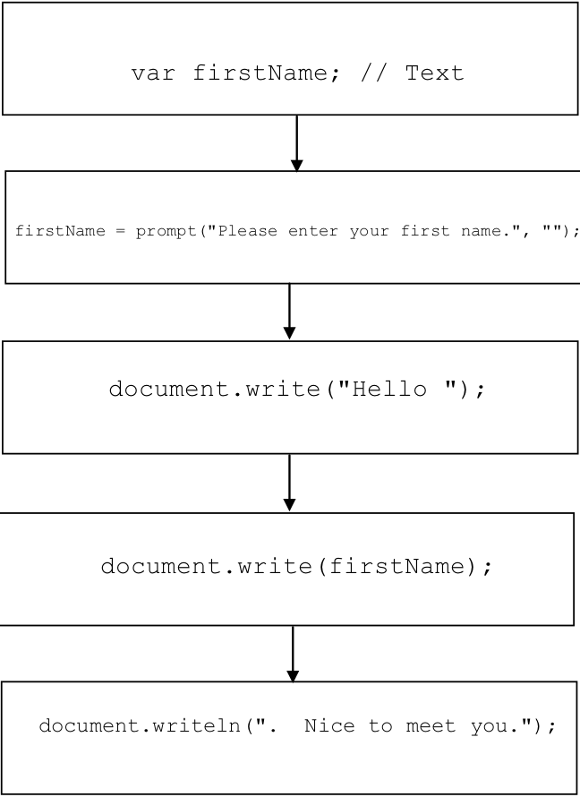

So far, in our study of Watson JavaScript we have looked at programs that can do rudimentary input and output of text strings and numbers, and perform simple calculations. But, what makes computers more than simple calculating devices is their ability to respond in different ways to different situations. In order to create programs capable of solving more complex tasks we need to examine how the basic instructions we have studied can be organized into higher-level constructs.
The vast majority of imperative programming languages support three types of control constructs which are used to group individual statements together and specify the conditions under which they will be executed. These control constructs are: sequence, selection, and repetition.
Sequence requires that the individual statements of a program be executed one after another, in the order that they appear in the program. Sequence is defined implicitly by the physical order of the statements. It does not require an explicit program structure.
Selection constructs contain one or more blocks of statements and specify the conditions under which the blocks should be executed. Basically, selection allows a human programmer to include within a program one or more blocks of “optional” code along with some tests that the program can use to determine which one of the blocks to perform. Selection allows imperative programs to choose which particular set of actions to perform, based on the conditions that exist at the time the construct is encountered during program execution.
Repetition constructs contain exactly one block of statements together with a mechanism for repeating the statements within the block some number of times. There are two major types of repetition: iteration and recursion. Iteration, which is usually implemented directly in a programming language as an explicit program structure, often involves repeating a block of statements either (1) while some condition is true or (2) some fixed number of times. Recursion involves a subprogram (e.g., a function) that makes reference to itself. As with sequence, recursion does not normally have an explicit program construct associated with it.
Sequence, selection, and repetition are discussed at length below; so don’t worry if their behavior and purpose are not yet 100% clear to you. At this point all you really need to understand is the basic idea behind each of the control constructs – that sequence involves performing statements one after another; selection involves choosing which group of statements to perform based on a test; and repetition involves performing a group of statements over and over.

Figure 8.9: A graphical representation of the “sequence” control construct